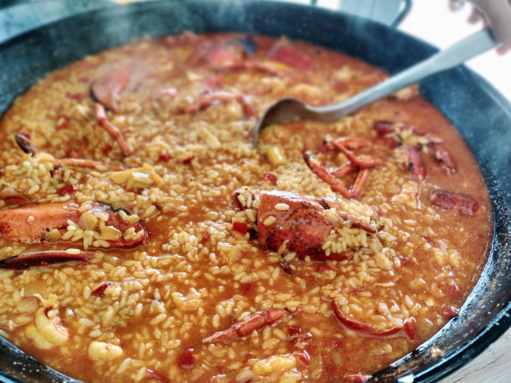

Raciones Caseras
Croquetas de jamón, rabo de toro o langostinos, torreznos crujientes, pulpo a la gallega, huevos rotos, zamburiñas, lagrimitas de pollo, cachopo de ternera, ensalada de ventresca.
Piel Canela Gastrobar es un restaurante en Valladolid donde disfrutar de raciones, tapas, cachopo, carnes, pescados y menús en una zona céntrica y accesible.
¿Buscas dónde comer o picotear en Valladolid? Bienvenido a Piel Canela Gastrobar, un restaurante de raciones y cocina casera situado en Calle Hípica, a solo dos minutos del Corte Inglés del Paseo Zorrilla. Aquí encontrarás raciones abundantes, platos caseros y un ambiente acogedor para comer o cenar en el centro.

Somos mucho más que un gastrobar. Somos un punto de encuentro para los amantes de la buena gastronomía, donde cada ingrediente es seleccionado con mimo y cada receta está pensada para sorprender tu paladar. Raciones abundantes y caseras, paellas y arroces por encargo, lechazo asado, y un ambiente perfecto para grupos, amigos y familias que buscan comer bien cerca del centro de Valladolid.

Croquetas de jamón, rabo de toro o langostinos, torreznos crujientes, pulpo a la gallega, huevos rotos, zamburiñas, lagrimitas de pollo, cachopo de ternera, ensalada de ventresca.
Arroz con bogavante, paella de marisco, arroz negro, paella valenciana, arroz a banda. Todos preparados por encargo.
Ofrecemos lechazo asado por encargo, jugoso y dorado, perfecto para celebraciones y grupos.

Descubre nuestra selección de platos elaborados con mimo y presentados con estilo. Desde tapas reinventadas hasta platos principales que rinden homenaje a la cocina mediterránea.

Pensadas para compartir, con producto fresco y preparadas al momento.

Atención ágil sin perder calidad en la preparación.

Mesas amplias, perfecto para grupos, parejas y familias.

Calle Hípica, a dos minutos del Paseo Zorrilla, en el centro de Valladolid.
Reserva tu mesa en Valladolid y disfruta de nuestra cocina casera.
"Camarera super profesional educada , atenta y simpática Cachopo buenísimo. Volveremos...."
"Todo muy rico, hemos comido 3 menús ...volveremos a repetir ..gracias"
"Excelente lugar para tomar un vermuth, para comer, cenar o venir a tomar un café. Ambiente buenísimo y personal super profesional y encantadoras."
Estamos en Calle Hípica 13, 47007 Valladolid, junto al Paseo Zorrilla y cerca de El Corte Inglés.
Cocina casera, raciones, tapas, cachopo de ternera, carnes, pescados, arroces por encargo, lechazo asado y postres caseros.
Sí, puedes reservar online desde esta web o llamarnos al 983 475 132 y al 662 467 435.
Sí, tenemos raciones pensadas para compartir: croquetas, torreznos, pulpo, huevos rotos, zamburiñas, cachopo, ensaladas y más opciones caseras.
Sí, preparamos arroces por encargo como arroz con bogavante, paella de marisco, arroz negro, paella valenciana y arroz a banda.
De lunes a jueves abrimos de 07:45 a 16:00. Viernes de 07:45 a 16:00 y de 19:30 a 00:00. Sábados de 10:00 a 16:00 y de 19:30 a 00:00. Domingos de 10:00 a 16:00. En julio y agosto, viernes y sábados por la tarde abrimos de 20:00 a 01:00.
Tenemos arroces, lechazo y menús por encargo perfectos para grupos.
📍 Dirección: Calle Hípica 13, 47007 Valladolid
📞 Teléfono: 983 475 132 · 662 467 435
🍽️ Tipo: Restaurante de raciones y cocina casera en Valladolid